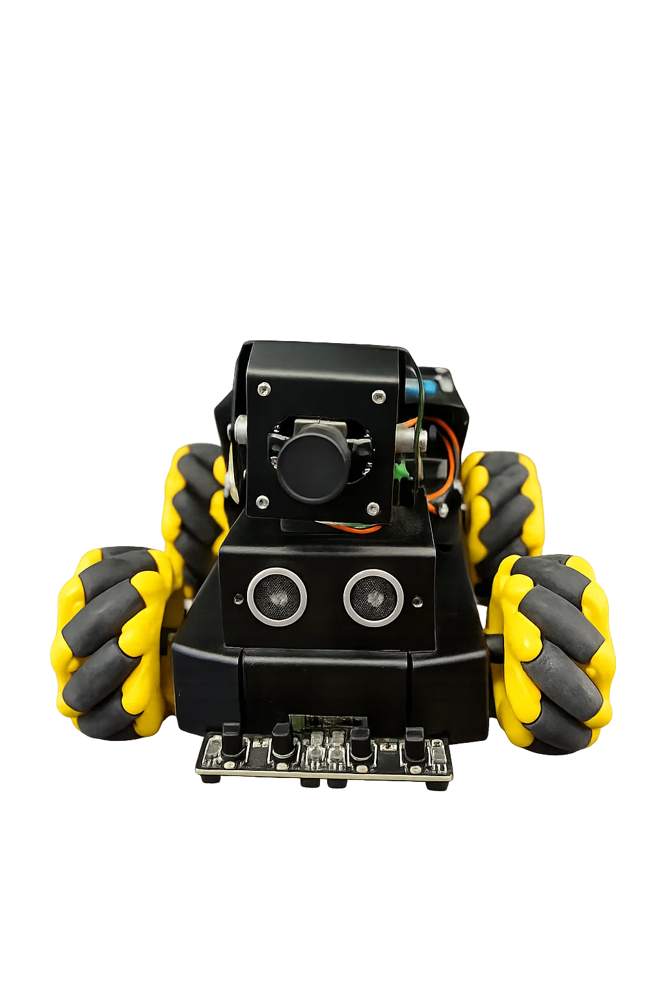
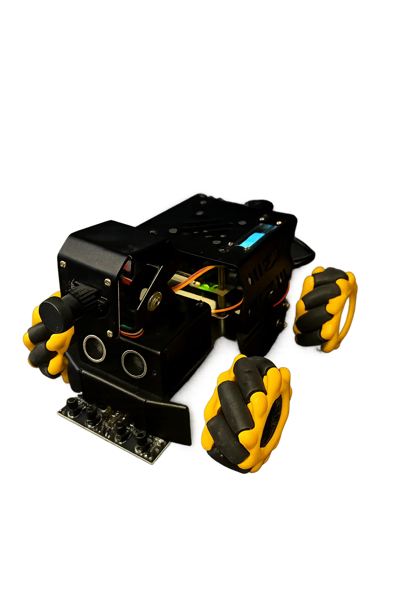
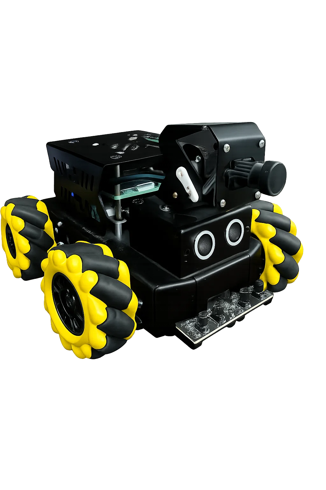

Este proyecto presenta a Raspbot_emotion que es un robot que se armó, se instalo su su sistema operativo para operarlo y se programo sus scripts desde cero, este lo que hace es que mediante el uso de su camara reconoce caras y gestos de una persona. Posteriormente imita sus gestos teniendo en cuenta 6 emociones principales: (Miedo, Alegría, Tristeza, Ira, Asco, Sorpresa). Este robot no cuenta con una imitación de expresiones faciales por lo que hace uso de sus componentes para poder expresar el mismo gesto que esta viendo, usando sus ruedas, el servomotor, bocina, buzzer, etc.